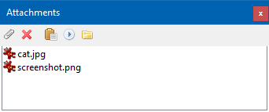

Working with attachments is one of the main features of the OutWiker. All files attached to the note are stored in the "__attach" subdirectory of the note's directory. To attach files just copy them into the "__attach" subdirectory. One of the software development tasks was to implement possibility to insert the attached images in note's text.
for example:
There is the special button bar (located on the "Attachments" pane) to work with attachments.

Its buttons are as follows:
- "Attach Files..." — To attach new files.
- "Remove Files..." — To remove selected files.
- "Paste" — To insert relative pathname of the selected file into the note's body, e.g., selecting the file "cat.jpg" attached to this note and clicking the "Paste" button results in inserting "__attach/cat.jpg".
- "Execute" — To execute the selected file.
- "Open attachments folder" — To open folder with attached files in the default file manager.